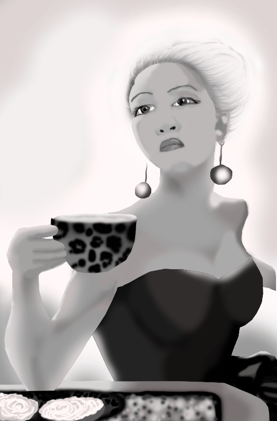
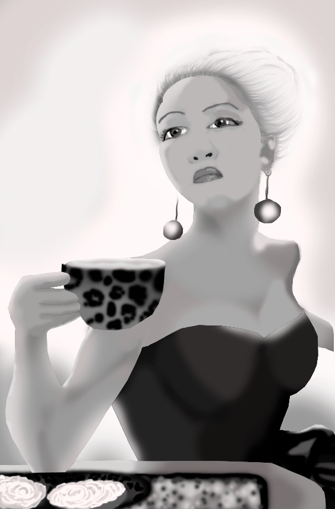

About Laise Bang

I am looking for
an internship as a multimedia designer, starting 28th of January, and lasting 10 weeks.
I would like
to work with video production, both pre and post production. I am very interested in working with After Effects and making Explainer videos. If it is possible I would also like to work with Graphic Design.
I am good at
finding effects and implementing them. I think I am very good at creating single pieces, but sometimes find it challenging to create a hole website with one common line / style, and this is something that I am working on.


 
